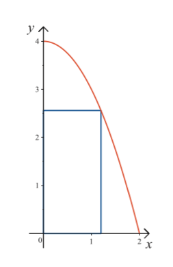
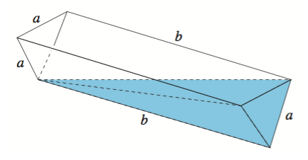
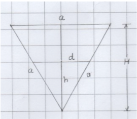

7. Praktiska tillämpningar
Inledande uppgifter
- Uppgift
- Deluppgit a
Lösningen
- Deluppgit b
Lösningen
- Deluppgit c
Lösningen
- Deluppgit a
- Uppgift
- Deluppgit a
Lösningen
- Deluppgit b
Lösningen
- Deluppgit c
Lösningen
- Deluppgit a
- Uppgift
Lösningen
- Uppgift
Lösningen
- Lite mera krävande uppgift
Lösningen
- En behållare innehåller 2,3 kg luft och en pump avlägsnar 5 % av luften i behållaren vid varje slag. Efter hur många slag återstår mindre än 0,2 kg luft i behållaren? [V01, 4]
Efter (minst) 48 slag.
- En rektangel har ett hörn i origo och de från hörnet utgående sidorna ligger på de positiva koordinataxlarna. Det fjärde hörnet ligger på parabeln \( y=4-x^2 \) i området \( x\geq 0 \), \( y\geq 0 \). Bestäm det exakta värdet för rektangelns största möjliga area.

Detta är en gammal uppgift då poängen var 6 poäng per uppgift.
Bredden för rektangeln är \( x \) och höjden \( y=4-x^2 \). (1 poäng)
Arean för rektangeln är \( A(x)=x(4-x^2) = 4x-x^3 \). (1 poäng)
Vi söker extremvärden och deriverar då funktionen \( A(x) \). \( A'(x)=4-3x^2 \). (1 poäng)
Nollställena för \( A'(x) \) är \( A'(x)=0 \Leftrightarrow 4-3x^2 = 0 \Leftrightarrow x^2=\dfrac{4}{3} \Leftrightarrow x= \dfrac{2}{\sqrt{3}} \). Märk att \( x\geq 0 \), därför har vi endast positiva rötter. (1 poäng)
Derivatafunktionen, \( A'(x)=4-3x^2 \) är en parabeln som öppnar sig nedåt. Då får vi ett största värde i punkten \( x=\dfrac{2}{\sqrt{3}} \). (1 poäng)
Rektangelns största area är \( A(\dfrac{2}{\sqrt{3}})=\dfrac{2}{\sqrt{3}}(4-(\dfrac{2}{\sqrt{3}})^2 = \dfrac{2}{\sqrt{3}}(4-\dfrac{4}{3}) = \dfrac{2}{\sqrt{3}}\cdot \dfrac{12-4}{3} = \dfrac{2}{\sqrt{3}}\cdot \dfrac{8}{3} = \dfrac{16\sqrt{3}}{3} \). (1 poäng)
- I ett bostadshus är hyresintäkterna 12 % lägre än kostnaderna för underhållet. Med hur många procent borde hyrorna höjas, för att de skall bli 10 % högre än underhållskostnaderna, när dessa samtidigt stiger med 4 %? [V05, 3]
Borde höjas med 30 %.
- Toppen av ett torn som befinner sig på slät mark syns från en plats i en 3,5 graders vinkel i förhållande till ett horisontellt plan. Om tornet observeras exakt en halv kilometer längre bort är vinkeln 2,5 grader. Hur högt är tornet? [H00, 4]
76 m.
- En vattenrännas ändar har formen av en liksidig triangel och triangelns sidor har längden \( a \). Rännans botten består av två rektangelformade skivor, vilkas längd är \( b \). [H16 6]
- En horisontell liggande ränna är först fylld med vatten. Rännan sätts att luta i längdriktningen så att vattenytan når den vänstra ändtriangelns nedre hörn enligt figuren. Hur många procent av vattnet rinner bort då rännan lutas?

Detta är en gammal uppgift då poängen var 6 poäng per uppgift. Här delas 3 poäng per a) och b).
Rännan är ett rakt prisma. Om triangelns area är A, så är rännans volym \( V_r=Ab \). (1 poäng)
Vattnet som blir kvar bilar en tresidig pyramid. Volymen för pyramiden är \( V_p = \dfrac{1}{3}Ab \).
Volymen av det vatten som runnit bort är \( V_b = V_r - V_p = \dfrac{2}{3}Ab \). (1 poäng)
Mängden vatten som runnit bort är \( \dfrac{V_b}{V_r} = \dfrac{\dfrac{2}{3}Ab}{Ab} = \dfrac{2}{3}= 66,66\ldots \% \approx 67 \) %. (1 poäng)
- Efter detta återställs rännan till sin ursprungliga horisontella ställning. Hur högt når då vattenytan mätt från rännans djupaste punkt?
Ändtriangelns höjd \( H=\dfrac{a\sqrt{3}}{2} \) och area \( A_1 = \dfrac{a^2\sqrt{3}}{4} \). (1 poäng)
Vattnet som är kvar bilar vid ändan en liksidig triangel som är likformig med ändtriangeln. Eftersom vattenmängdens förhållande och förhållandet mellan areorna för ändtrianglarna får vi förhållandet
\( \dfrac{d^2}{a^2} = \dfrac{1}{3} \), som ger oss \( d=\dfrac{a}{\sqrt{3}} \). (1 poäng)

Vattnets höjd är då \( h=\dfrac{d\sqrt{3}}{2} = \dfrac{a}{\sqrt{3}} \cdot \dfrac{\sqrt{3}}{2} = \dfrac{a}{2} \). (1 poäng)
- En horisontell liggande ränna är först fylld med vatten. Rännan sätts att luta i längdriktningen så att vattenytan når den vänstra ändtriangelns nedre hörn enligt figuren. Hur många procent av vattnet rinner bort då rännan lutas?
- En vas har formen av en parabolid (parabel som roterar kring sin symmetriaxel). Dess höjd är 40 cm och den horisontala cirkulära öppningen är 20 cm bred. Man häller 1 liter vatten i den tomma vasen. Hur högt stiger vattnet?
Bestäm funktionen som beskriver parabeln. Gå via integraler.
16 cm.
- Ur en cirkulär skiva med radien \( r \) bortklipps en sektor och den återstående delen böjs till mantelytan för en rak cirkelkon. Bestäm med en grads noggranhet medelpunktsvinkeln hos den bortklippta sektorn, då konens volym är så stor som möjligt. [H08, 9]
estäm en funktion som beskriver konens volym. Undersök funktionen och utnyttja ditt resultat för att få medelpunktsvinkeln.
66 grader.
Utan räknare
Sockerhalten i en blandsaft som består av päronsaft och äppelsaft är 11 %. Bestäm safternas blandningsproportion, då sockerhalten i päronsaften är 14 % och i äppelsaften 7 %. [H03, 5]
5-1.png
Om en köpman sänker priset på en vara med \( p \) % växer försäljningens volym 1,6\( p \). För vilket värde på \( p \) får köpmannen möjligast stor intäkt?
5-2a.png
En budget skall skäras ned totalt 25 % under sex år. Hur stor bör varje nedskärning vara årligen, då den procentuella nedskärningen skall vara lika stor varje år? [H95, 7]
5-2b.png
Med räknare
Foten av en 73 meter hög radiomast syns från en punkt A i markplanet rakt norr på avståndet 103 meter. Foten av en annan radiomast, som är 93 meter hög, syns från A rakt nordost på avståndet 120 meter. Beräkna med en meters noggrannhet avståndet mellan radiomasternas toppar. (Jordens krökning beaktas inte.)
Lösning
A och B är två observationsplatser i det horisontella markplanet på avståndet 2140 meter från varandra. Punkten C befinner sig på toppen av ett berg. Riktningsvinkeln mellan A och toppen C är i avseende på sträckan AB 38o och riktningsvinkeln mellan B och C i avseende på sträckan BA 111o. I avseende på horisontalplanet syns toppen C från A i vinkeln 21o. Hur högt är berget?
Lösning
En fiskare bor på en holme från vars brygga det är 3 km till den närmaste punkten på den raka strandlinjen på fastlandet. Från denna punkt är det 5 km till postkontoret, som är beläget vid stranden på fastlandet. Fiskaren ror med hastigheten 4 km/h och promenerar med hastigheten 5 km/h. Hur skall fiskaren välja rutten från holmen till postkontoret för att nå fram på så kort tid som möjligt?
Lösning